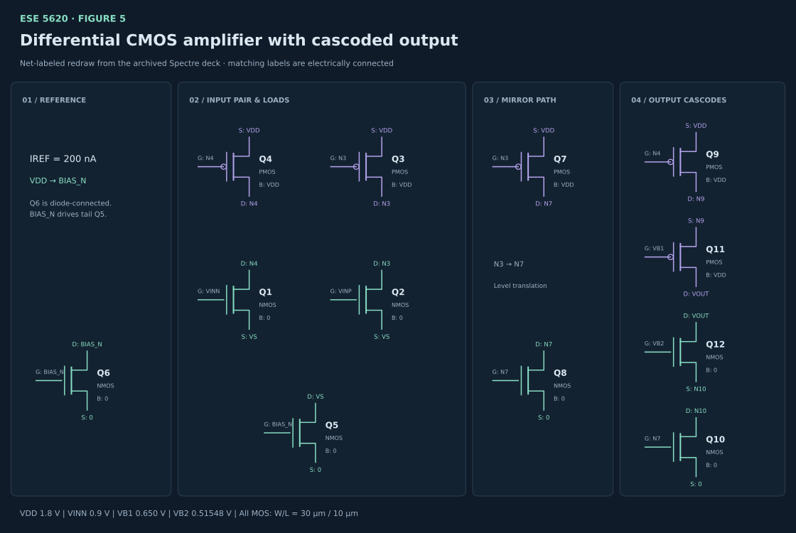
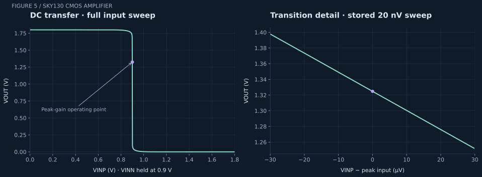
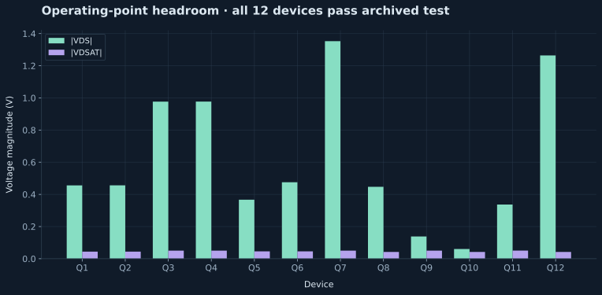

FEATURED / ANALOG IC DESIGN / ESE 5620
Differential CMOS
amplifier.
Figure 5 · a 12-transistor Sky130 circuit, from differential input to a cascoded output.
A study in biasing, current mirrors, and output resistance. This project documents the completed ESE 5620 Figure 5 circuit using archived Spectre results, a clearer net-labeled schematic, and independently reproduced gain calculations.
01 / ARCHITECTURE
Steering current. Raising output resistance.
The NMOS input pair Q1–Q2 shares tail node VS. Q6 establishes BIAS_N from a 200 nA reference; Q5 mirrors that bias into the tail. Diode-connected PMOS loads Q4 and Q3 turn branch-current changes into the N4 and N3 voltages.
Differential input
Q1 is driven by VINN and Q2 by VINP. The archived sweep holds VINN at 0.9 V while sweeping VINP, so the reported gain is the single-input derivative ∂VOUT/∂VINP under that condition.
Mirror and translation path
Q3–Q7 mirror the N3-controlled PMOS branch into diode-connected Q8, establishing N7. Q8–Q10 mirror the resulting NMOS current. Q4–Q9 carry the N4-controlled PMOS branch to N9.
Cascoded output
Q11 sits below Q9 in the upper PMOS branch; Q12 sits above Q10 in the lower NMOS branch. Their drains meet at VOUT. Fixed VB1 and VB2 biases increase output resistance while consuming voltage headroom.
Device geometry: W = 30 µm, L = 10 µm, m = 1 for all twelve MOSFETs. NMOS bulk connections are at ground; PMOS bulks are at VDD. These are the archived circuit parameters, not a minimum-length process demonstration.
02 / SCHEMATIC PRESENTATION
The same circuit. A clearer reading order.
The redraw groups the original devices by function and preserves every drain, gate, source, and bulk net from the Spectre deck. Matching net labels represent electrical connections. It is a portfolio schematic redraw, rather than a new Virtuoso screenshot or a modified Cadence cell.

assignment_fig5.scs. Teal denotes NMOS, violet PMOS. Expand to read terminal and bulk labels. The downloadable topology table provides all twelve D/G/S/B connections.Simulation conditions
- PDK / model corner
- Sky130 nfet_01v8 / pfet_01v8 · TT
- VDD / temperature
- 1.8 V / 27 °C
- Input condition
- VINN = 0.9 V; VINP = 0–1.8 V
- Cascode biases
- VB1 = 0.650 V; VB2 = 0.51548 V
- Reference current
- IREF = 200 nA
- Fine sweep
- 0.899791–0.899851 V; 20 nV step
03 / REAL SPECTRE RESULTS
A narrow high-gain operating region.
The full transfer sweep establishes the overall response. The refined sweep resolves the steep transition near 0.9 V; the magnified axis uses microvolts so the local behavior remains readable. The peak is a local operating-point result, not a claim of constant gain across the full input range.

transfer.csv; detail from the stored Spectre PSF-ASCII refined sweep. Peak input 0.899821268 V; corresponding output 1.324748224 V.

Scope: these are archived schematic-level TT DC and operating-point results. This case study does not claim measured silicon, post-layout extraction, AC bandwidth, phase margin, noise, or PVT robustness. No new Spectre run was performed for this presentation.
04 / GAIN VERIFICATION
Reproduce the slope. Check the small-signal model.
1. DC transfer derivative
The stored refined sweep contains 3,001 samples at 20 nV spacing. A fifth-degree polynomial is fitted to 501 samples within ±5 µV of the local peak. The stationary point of its derivative reproduces the archived result.
Aᵥ = ∂VOUT / ∂VINP = −2,440.91549 V/V
20 log₁₀ |Aᵥ| = 67.75105 dB
2. Full nodal small-signal calculation
For each device, use the saved gₘ, gₘᵦ and gds at the peak operating point. Sum drain and source KCL contributions over VS, N3, N4, N7, N9, N10, VOUT, and BIAS_N. VDD, VINN, VB1, VB2, and ground are AC-fixed; VINP is the unit input.
id = gds(vd − vs) + gₘ(vg − vs) + gₘᵦ(vb − vs)
Aᵥ,nodal = −2,473.09568 V/V
|Aᵥ,nodal − Aᵥ,DC| / |Aᵥ,DC| × 100 = 1.31837%
Why this differs from the archived theoretical gain
The original validation records −2,490.08652 V/V (2.01445% error). Its theoretical-gain routine builds terminal coefficients with a dictionary. For diode-connected devices, the gate and drain share a key, so one conductance contribution overwrites the other. This presentation adds each terminal contribution separately and obtains −2,473.09568 V/V. The archived JSON remains unchanged; both results are available in the source downloads.
3. Output-resistance cross-check
For each cascode branch, the saved operating-point parameters give:
Rbranch ≈ rₒ,outer + rₒ,inner + (gₘ,outer + gₘᵦ,outer)rₒ,outer rₒ,inner
Rupper ≈ 9.822 GΩ · Rlower ≈ 1.304 GΩ
Rout ≈ Rupper ∥ Rlower ≈ 1.151 GΩ
These are local branch estimates from the saved conductances, not a separately simulated output-resistance sweep. The full nodal solution is used for the gain comparison.
05 / TRACEABLE ARTIFACTS
Inspect the underlying data.
The original Cadence project is preserved. These downloads are copies of its Figure 5 artifacts, plus a reproducible presentation script and verification summary. The Spectre deck requires the referenced Sky130 models and an appropriate simulator environment.
Method: parse the stored PSF-ASCII sweep, reproduce the peak fit, solve an additive small-signal nodal model using saved device parameters, and render figures with Matplotlib. Source data and derived results are kept separate.